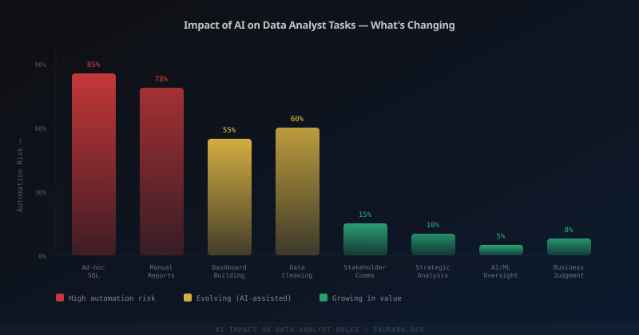

Let me tell you a story about a Tuesday.
It's 9 AM. Priya, a data analyst at a mid-size e-commerce company, opens her laptop. Her Slack has three messages waiting. Her manager wants to know why sales dropped in the West region last week. A product manager wants a breakdown of which customer segments are churning. And someone from finance wants a monthly revenue reconciliation — the same one Priya has been building manually in Excel for two years, every single month, without fail.
This was her Tuesday in 2022. Let me tell you what her Tuesday looks like in 2025.
The Same Tuesday, Three Years Later
The finance reconciliation? It runs automatically every month-end. A Python script pulls the data, formats it exactly the way finance wants, and emails it. Priya built it once, eighteen months ago, and hasn't thought about it since.
The churn breakdown? She opens a dashboard she built with her BI tool. Filters by segment. The answer is already there, updating daily. Two minutes.
The West region drop? She types the question into her AI query tool — the one her team built on top of their data warehouse. It generates SQL, runs it, and shows her a chart. She asks a follow-up: "Break this down by product category." Another chart. She has a hypothesis in ten minutes and a slide ready to share in twenty.
By 10 AM, Priya has answered all three requests. In 2022, this would have been her entire day.

What Actually Got Automated
The headlines always say "AI will replace data analysts." That's not what happened. What got automated was the most painful, least interesting parts of the job.
The recurring reports that used to consume every Monday morning. The ad-hoc SQL queries that stakeholders sent in all day — questions that were individually simple but collectively exhausting. The data cleaning pipelines that required careful but mechanical attention. The dashboard updates that were just copy-paste with new numbers.
Nobody is crying about losing those tasks. The analysts who are thriving didn't mourn them. They automated everything automatable as fast as they could — and used the freed-up time to do the work they actually wanted to do.
What Didn't Get Automated
The West region question isn't really "why did sales drop." It's: Is this signal or noise? If it's signal, is it a product problem, a logistics problem, a pricing problem, or a competitor problem? Which of those should we actually act on this week, and which can wait? Who needs to be in the room when we decide?
That chain of thinking — from data to decision — still runs through a human brain. The AI surfaced the number. A person figured out what it meant and what to do about it.
The same is true of stakeholder relationships. The product manager who asks for a churn breakdown isn't just asking for a chart. They're asking Priya — specifically, someone who knows the data and has been watching these numbers for two years — whether their intuition about customer behaviour is right or wrong. That trust, that context, that institutional knowledge? Completely unautomatable.
The Analysts Who Got Hurt
But let's be honest. Not everyone navigated this well.
Some analysts treated AI tools as a threat and refused to engage with them. They kept doing things the slow way. Their output looked the same as it always had — and as AI-assisted colleagues started answering questions faster and taking on more complex work, the slowness became visible.
Some junior analysts who were hired specifically for high-volume, low-complexity SQL work found that work genuinely dried up. The entry rung of the ladder got narrower. That's real, and it's not a comfortable thing to acknowledge.
And some analysts were good at execution but had never developed opinions — never pushed back on a brief, never told a stakeholder "I think you're asking the wrong question." When execution got easier for everyone, having no opinion was suddenly a visible gap.
The Analysts Who Got Better
The ones who thrived did something specific: they treated every automation win as a budget. Time reclaimed from the churn report went straight into understanding why customers were churning — not just measuring it. Time reclaimed from the monthly reconciliation went into building a proactive alert system instead of a reactive document.
They also got better at the conversation that happens after the analysis. The chart is the beginning, not the end. "Here's what the data shows, here's what I think it means, here's what I'd recommend we do, and here's what we'd need to believe for that recommendation to be wrong." That structure — analysis, interpretation, recommendation, uncertainty — became their core product.
AI made them faster at producing the analysis. It made the interpretation and recommendation part more important, not less. And they were ready for that.
The New Baseline Skill Set
If you're a data analyst in 2026 and you haven't automated your recurring work, you're leaving time on the table. If you can't use an AI tool to speed up exploratory analysis, you're slower than your peers. That's the new baseline — not the ceiling.
The ceiling is different now. It's the analyst who can look at an automated output, catch the thing the model missed, understand why the metric moved before anyone asks, walk into a room of senior stakeholders with a clear point of view, and leave with a decision made. That person is not being replaced. That person is more valuable than they've ever been.
Back to Priya
It's 10:15 AM. Priya has answered three questions. She opens a document she's been working on for two weeks — a proposal to restructure how her company measures customer lifetime value. The current metric is too simple, she thinks. It's leading the product team to optimize for the wrong things.
She didn't have time to think about this in 2022. She was too busy building Excel files. In 2025, this is her real job. And she's good at it.
That's the actual impact of AI on data analyst jobs. Not replacement. Reallocation. The question is what you do with the time that gets handed back to you.